Técnicas Avanzadas de Predicción en Negocios · Cuaderno de práctica (nivel avanzado)
Datos: Encuesta Cuatrienal de Estructura Salarial 2022 (INE), microdatos.
Qué vamos a hacer
Predecimos el salario de los trabajadores de la EES con XGBoost y nos preguntamos cómo lo predice.
Una regresión lineal permite interpretar sus coeficientes: cada uno dice cuánto cambia la predicción con su predictor.
Los modelos que hemos visto en este bloque agregan predicciones de árboles y no tienen coeficientes. Para entender qué hacen necesitamos otras herramientas, y cada una responde a una pregunta distinta.
Preparación. Datos, predictores, preprocesador, particiones y regresión lineal de referencia.
Introducimos un XGBoost con submuestreo. Llevamos al boosting la aleatoriedad del bagging, que elige al azar las filas y las columnas de cada árbol, y elegimos el modelo que vamos a interpretar.
Después vienen tres tipos de interpretaciones, una en cada bloque:
¿Qué predictores pesan en las predicciones? Importancia por ganancia y por permutación.
¿Cómo cambia la predicción con un predictor? Dependencia parcial y curvas ICE.
¿Por qué el modelo predice este salario para este trabajador? Valores de Shapley: para una observación, agregando todas y para un predictor. Al final, un explicador que sirve para cualquier modelo.
Al final hay dos tareas opcionales: combinar modelos con voting y stacking, e interpretar los coeficientes de una regresión lineal con statsmodels.
Hay cinco ejercicios y cinco «Para pensar» con la respuesta plegada. Las tareas opcionales añaden dos ejercicios y un «Para pensar».
En cada ejercicio, la celda empieza vacía. El enunciado dice qué hacer y qué funciones usar, y casi siempre basta con adaptar una celda anterior.
0. Preparación
Usa el entorno tap del curso.
Núcleos del procesador.
Un núcleo es una parte del procesador que realiza cálculos. Cuando hay varios, pueden trabajar a la vez.
Para aprovechar esta capacidad, consultamos con os.cpu_count() cuántas unidades de procesamiento reconoce el sistema.
En el siguiente bloque de código guardamos ese número menos uno en N_NUCLEOS, para dejar margen a otras tareas del ordenador.
Más adelante usaremos esta variable como valor del argumento n_jobs, que controla cuántas tareas se ejecutan en paralelo. Así podremos reducir el tiempo de cálculo repartiendo tareas independientes, como los ajustes de la validación cruzada.
import osimport numpy as npimport pandas as pdimport matplotlib.pyplot as plt# XGBoost (con la interfaz de scikit-learn) y shap, que calcula los valores de Shapley.from xgboost import XGBRegressorimport shap# Regresión lineal y preprocesado de los predictores.from sklearn.linear_model import LinearRegressionfrom sklearn.compose import ColumnTransformerfrom sklearn.preprocessing import StandardScaler, OneHotEncoderfrom sklearn.pipeline import Pipeline# División, validación cruzada y RMSE.from sklearn.model_selection import train_test_split, KFold, cross_val_scorefrom sklearn.metrics import root_mean_squared_error# Herramientas de interpretación de scikit-learn.from sklearn.inspection import permutation_importance, PartialDependenceDisplaySEMILLA =42# Núcleos para repartir el trabajo: todos los del ordenador menos uno (al menos uno).N_NUCLEOS =max(1, os.cpu_count() -1)print("Núcleos para los cálculos en paralelo:", N_NUCLEOS)
Núcleos para los cálculos en paralelo: 17
Datos, predictores y división
Cargamos los microdatos de la EES 2022 y nos quedamos con los trabajadores que tienen un salario positivo y no superior al percentil 99.
De ellos elegimos al azar 10 000, con la semilla 42.
Usamos 16 predictores, 14 categóricos y 2 numéricos: la antigüedad en la empresa (ANOANTI, en años) y la jornada anual pactada (JAP, en horas).
Dividimos los datos en entrenamiento (80 %) y test (20 %).
# Datos de la EES 2022 en la web del curso (separador: tabulación).URL_DATOS ="https://juandmontoro.github.io/tap/data/EES_2022.tab"df = pd.read_csv(URL_DATOS, sep="\t", low_memory=False)df.columns = df.columns.str.replace('"', "").str.strip()# Trabajadores con salario positivo y no superior al percentil 99.tope = df["RETRINOIN"].quantile(0.99)salario_admitido = (df["RETRINOIN"] >0) & (df["RETRINOIN"] <= tope)limpio = df[salario_admitido]# 10 000 trabajadores elegidos al azar.datos = limpio.sample(n=10000, random_state=SEMILLA).reset_index(drop=True)print("Observaciones:", len(datos))
Observaciones: 10000
PRED_CATEGORICOS = ["SEXO", "ESTU", "ANOS2", "TIPOCON", "TIPOJOR", "CNO1", "CNACE","CONTROL", "MERCADO", "REGULACION", "RESPONSA", "NUTS1", "TIPOPAIS", "ESTRATO2",]PRED_NUMERICOS = ["ANOANTI", "JAP"]# X contiene los 16 predictores: categóricos como categorías y numéricos como decimales (float).X = datos[PRED_CATEGORICOS + PRED_NUMERICOS].copy()X[PRED_CATEGORICOS] = X[PRED_CATEGORICOS].astype("category")X[PRED_NUMERICOS] = X[PRED_NUMERICOS].astype(float)# y es el salario.y = datos["RETRINOIN"]# División: 80 % entrenamiento y 20 % test.X_train, X_test, y_train, y_test = train_test_split(X, y, test_size=0.2, random_state=SEMILLA)print("Entrenamiento:", len(X_train), "| test:", len(X_test))
Entrenamiento: 8000 | test: 2000
Códigos que aparecerán en las interpretaciones:
ESTU (estudios): 1, menos que primaria; 2, primaria; 3, primera etapa de secundaria; 4, segunda etapa de secundaria; 5, formación profesional de grado superior; 6, diplomatura universitaria; 7, licenciatura o doctorado.
TIPOJOR (tipo de jornada): 1, tiempo completo; 2, tiempo parcial.
CNO1 (ocupación): A0, directores y gerentes; C0, otros técnicos y profesionales científicos e intelectuales; E0, empleados de oficina que no atienden al público.
SEXO: 1, hombre; 6, mujer. RESPONSA (responsabilidad de organización o supervisión): 1, sí; 0, no.
Preprocesador, particiones y modelo base
Usamos un preprocesador que aplica transformaciones distintas a predictores categóricos y a numéricos. Para los modelos de árboles, como XGBoost, el argumento escalar=False evita el escalado de los numéricos, que no les hace falta.
Cada predictor categórico se convierte en una columna por categoría, con un 1 si el trabajador la tiene y un 0 si no. Las categorías con menos del 1 % de los trabajadores se agrupan en una sola columna.
Las particiones cv5 son las mismas en todo el cuaderno.
Como referencia calculamos el RMSE de validación cruzada de la regresión lineal, el modelo base. cross_val_score ajusta el modelo cinco veces, una por partición de cv5, y con scoring="neg_root_mean_squared_error" devuelve los cinco RMSE de validación con el signo cambiado.
# Devuelve un preprocesador nuevo, sin ajustar, en cada llamada.def crear_preprocesador(escalar=True):# Numéricas: escaladas, o sin cambios con "passthrough".if escalar: numericas = StandardScaler()else: numericas ="passthrough"# Categóricas: una columna por categoría (las de menos del 1 % de los trabajadores se agrupan en una).return ColumnTransformer([ ("numericas", numericas, PRED_NUMERICOS), ("categoricas", OneHotEncoder(handle_unknown="ignore", min_frequency=0.01, sparse_output=False), PRED_CATEGORICOS), ])# Cinco particiones del entrenamiento, barajadas con la semilla.cv5 = KFold(n_splits=5, shuffle=True, random_state=SEMILLA)
# Modelo base: preprocesador con escalado y regresión lineal.lineal = Pipeline([ ("preprocesado", crear_preprocesador()), ("modelo", LinearRegression()),])puntuaciones_lineal = cross_val_score(lineal, X_train, y_train, scoring="neg_root_mean_squared_error", cv=cv5, n_jobs=N_NUCLEOS)# scikit-learn devuelve el RMSE con el signo cambiado: lo pasamos a positivo.print("Regresión lineal | RMSE de validación cruzada:", round(-puntuaciones_lineal.mean()), "euros","| error típico:", round(puntuaciones_lineal.std() / np.sqrt(5)))
La regresión lineal tiene un RMSE de validación cruzada de 11 956 euros, con un error típico de 222 euros.
Es la referencia que XGBoost tiene que mejorar.
Bloque 1. XGBoost con submuestreo
1.1 XGBoost sin azar
XGBoost ajusta árboles uno detrás de otro.
Cada árbol nuevo intenta corregir los errores de la predicción acumulada hasta ese momento, y su aportación se multiplica por la tasa de aprendizaje (learning_rate) antes de sumarse.
Usamos 300 árboles, tasa de aprendizaje 0,1 y profundidad 4, valores que una búsqueda con validación cruzada eligió para estos datos.
Con los valores por defecto de subsample y colsample_bytree (los dos, 1), cada árbol se ajusta con todos los trabajadores del entrenamiento y puede usar todas las columnas. Por eso dos ajustes con los mismos datos dan el mismo modelo: lo llamamos determinista.
El argumento importance_type="total_gain" no cambia el ajuste. Fija cómo se mide la importancia por ganancia, que usaremos en el bloque 2.
# XGBoost determinista: 300 árboles, tasa 0,1 y profundidad 4; cada árbol usa todas las filas y columnas.xgb_det = Pipeline([ ("preprocesado", crear_preprocesador(escalar=False)), ("modelo", XGBRegressor(n_estimators=300, learning_rate=0.1, max_depth=4, importance_type="total_gain", random_state=SEMILLA)),])puntuaciones_det = cross_val_score(xgb_det, X_train, y_train, scoring="neg_root_mean_squared_error", cv=cv5, n_jobs=N_NUCLEOS)print("XGBoost determinista | RMSE de validación cruzada:", round(-puntuaciones_det.mean()), "euros","| error típico:", round(puntuaciones_det.std() / np.sqrt(5)))
El XGBoost determinista tiene un RMSE de validación cruzada de unos 11 000 euros, unos 1 000 menos que la regresión lineal.
Su error típico, de unos 200 euros, es parecido al de la regresión lineal.
Cifras en otro ordenador. XGBoost puede dar en tu ordenador RMSE que se separan unas decenas de euros de los del texto: el resultado depende del ordenador y de la versión de xgboost. Por eso el texto da sus cifras redondeadas. Las comparaciones entre modelos se mantienen.
1.2 XGBoost estocástico
El bagging ajusta cada árbol con una muestra distinta de los datos, y el random forest añade una selección al azar de las columnas en cada corte. Así los árboles se parecen menos entre sí. XGBoost puede llevar esa aleatoriedad al boosting con dos argumentos:
subsample es la fracción de trabajadores con la que se ajusta cada árbol. Antes de ajustar un árbol, XGBoost elige al azar, sin reemplazamiento, esa fracción del entrenamiento. Con 0,8, cada árbol ve un 80 % distinto de los trabajadores.
colsample_bytree es la fracción de columnas que puede usar cada árbol. Antes de ajustar un árbol, XGBoost elige al azar esa fracción de las 88 columnas del preprocesado, y el árbol solo puede cortar por ellas. Con 0,5, cada árbol ve la mitad.
colsample_bytree elige las columnas una vez por árbol. El random forest las elige en cada corte (max_features), y su equivalente en XGBoost es colsample_bynode.
Con una fracción por debajo de 1, el azar entra en el ajuste: la semilla (random_state) cambia el modelo, porque cambia qué trabajadores y qué columnas ve cada árbol. Este método se llama stochastic gradient boosting (boosting estocástico).
Ajustamos el mismo XGBoost con subsample=0.8 y colsample_bytree=0.5.
# XGBoost estocástico: cada árbol ve el 80 % de los trabajadores y la mitad de las columnas, elegidos al azar.xgb = Pipeline([ ("preprocesado", crear_preprocesador(escalar=False)), ("modelo", XGBRegressor(n_estimators=300, learning_rate=0.1, max_depth=4, subsample=0.8, colsample_bytree=0.5, importance_type="total_gain", random_state=SEMILLA)),])puntuaciones_xgb = cross_val_score(xgb, X_train, y_train, scoring="neg_root_mean_squared_error", cv=cv5, n_jobs=N_NUCLEOS)print("XGBoost estocástico | RMSE de validación cruzada:", round(-puntuaciones_xgb.mean()), "euros","| error típico:", round(puntuaciones_xgb.std() / np.sqrt(5)))
El XGBoost estocástico tiene un RMSE de validación cruzada de unos 10 900 euros, unos 100 euros menos que el determinista.
La diferencia es menor que el error típico de cualquiera de los dos (unos 190-200 euros).
Este resultado corresponde a una semilla. Con otra, el estocástico sería otro modelo y su RMSE cambiaría. ¿Cuánto?
Ejercicio 1. ¿Cuánto mueve la semilla el RMSE?
Calcula el RMSE de validación cruzada del XGBoost estocástico con las semillas 1, 2, 3, 4 y 5. Crea el Pipeline de 1.2 con random_state=semilla dentro de un bucle for, y guarda los cinco RMSE en una lista.
Llama semilla (en minúscula) a la variable del bucle y xgb_semilla al modelo.
Si reutilizas SEMILLA o xgb, el resto del cuaderno interpretará otro modelo, el de la última semilla del bucle.
Calcula la media de los cinco RMSE y su recorrido (el máximo menos el mínimo).
¿Es la mejora del estocástico frente al determinista mayor que lo que mueve la semilla? ¿Y que el error típico? ¿Qué concluyes sobre el submuestreo en estos datos?
# Paso 1. RMSE de validación cruzada del XGBoost estocástico con cinco semillas.rmse_semillas = []for semilla in [1, 2, 3, 4, 5]: xgb_semilla = Pipeline([ ("preprocesado", crear_preprocesador(escalar=False)), ("modelo", XGBRegressor(n_estimators=300, learning_rate=0.1, max_depth=4, subsample=0.8, colsample_bytree=0.5, random_state=semilla)), ]) puntuaciones = cross_val_score(xgb_semilla, X_train, y_train, scoring="neg_root_mean_squared_error", cv=cv5, n_jobs=N_NUCLEOS) rmse_semillas.append(-puntuaciones.mean())# Paso 2. Los cinco RMSE, su media y su recorrido.rmse_semillas = pd.Series(rmse_semillas, index=[1, 2, 3, 4, 5])print(rmse_semillas.round(0))print("Media:", round(rmse_semillas.mean()), "euros | recorrido:",round(rmse_semillas.max() - rmse_semillas.min()), "euros")
Paso 3. ¿Es la mejora del estocástico frente al determinista mayor que lo que mueve la semilla? ¿Y que el error típico? ¿Qué concluyes sobre el submuestreo en estos datos?
Solución.
Con las cinco semillas, el RMSE de validación cruzada del estocástico queda entre unos 10 860 y 10 920 euros. La semilla lo mueve unas decenas de euros (aquí, un recorrido de unos 60).
La mejora media frente al determinista (unos 11 000 euros) es de unas decenas de euros, hasta unos 100. Es del mismo orden que lo que mueve la semilla: con otra semilla, o en otro ordenador, alguna puede quedar por encima del determinista.
Y es menor que el error típico (unos 190 euros): la validación cruzada no separa los dos modelos.
Conclusión: en estos datos, el submuestreo mejora poco, y la mejora no se distingue de lo que mueve el azar. Interpretamos el estocástico sabiendo que su ventaja es, como mucho, pequeña.
Para pensar 1
Con subsample=0.8, cada árbol corrige los errores de la predicción acumulada mirando solo a un 80 % de los trabajadores. ¿Por qué puede eso mejorar el error de validación, si cada árbol ve menos datos?
Respuesta
En el boosting, cada árbol persigue los residuos que dejan los anteriores, y con 300 árboles el modelo acaba siguiendo también el ruido de los trabajadores del ajuste.
Si cada árbol ve otro 80 %, un trabajador con un salario anómalo solo influye en una parte de los árboles, y los árboles se parecen menos entre sí.
El efecto es el del bagging: la predicción depende menos de unos pocos trabajadores, y el modelo sobreajusta menos. Es una forma de regularización, como la tasa de aprendizaje o la profundidad.
A cambio, cada árbol es algo peor por separado. Si la fracción es muy baja, esa pérdida pesa más que la ganancia.
1.3 El modelo que interpretamos
A partir de aquí interpretamos el XGBoost estocástico de 1.2, con la semilla 42.
Lo ajustamos con todo el entrenamiento, y ajustamos también la regresión lineal.
Calculamos el RMSE de test de los dos, una sola vez. El test informa del error con trabajadores nuevos y no cambia la elección.
Desde aquí, el test solo sirve para describir el modelo con 2 000 trabajadores que no ha visto: las herramientas de los bloques 2, 3 y 4 se calculan con ellos.
# Ajuste con todo el entrenamiento.lineal.fit(X_train, y_train)xgb.fit(X_train, y_train)# RMSE de test, una sola vez.print("Regresión lineal | RMSE de test:", round(root_mean_squared_error(y_test, lineal.predict(X_test))), "euros")print("XGBoost estocástico | RMSE de test:", round(root_mean_squared_error(y_test, xgb.predict(X_test))), "euros")
Regresión lineal | RMSE de test: 11860 euros
XGBoost estocástico | RMSE de test: 10427 euros
Lectura de los resultados.
En el test, XGBoost tiene un RMSE unos 1 400 euros menor que el de la regresión lineal, que es de 11 860 euros.
Bloque 2. ¿Qué predictores pesan en las predicciones?
2.1 Importancia por ganancia
Cada corte de un árbol reduce la pérdida, que aquí es el error cuadrático. Esa reducción es la ganancia del corte.
El atributo feature_importances_ del XGBoost ajustado suma la ganancia de todos los cortes que usan cada columna, en los 300 árboles, y la divide por el total. Así, las importancias de todas las columnas suman 1.
Es lo que pide importance_type="total_gain". El valor por defecto de XGBoost ("gain") promedia la ganancia por corte, y da otro reparto.
Esta medida tiene dos límites:
Mide columnas del preprocesado. Un predictor categórico se reparte entre sus columnas, una por categoría: la ocupación (CNO1) tiene 16, y su importancia queda dividida entre ellas.
Se calcula con los datos del ajuste. No dice si esos cortes ayudan a predecir a trabajadores nuevos.
Recuperamos los nombres de las 88 columnas del preprocesado con get_feature_names_out() y les quitamos el prefijo del transformador (numericas__, categoricas__).
# Nombres de las columnas del preprocesado, sin el prefijo del transformador.nombres = pd.Index(xgb["preprocesado"].get_feature_names_out())nombres = nombres.str.replace("numericas__", "").str.replace("categoricas__", "")# Importancia por ganancia de cada columna.ganancia = pd.Series(xgb["modelo"].feature_importances_, index=nombres)# Las 15 columnas con más ganancia, en barras.ganancia.sort_values().tail(15).plot.barh(figsize=(6, 5))plt.xlabel("importancia por ganancia (proporción del total)")plt.show()
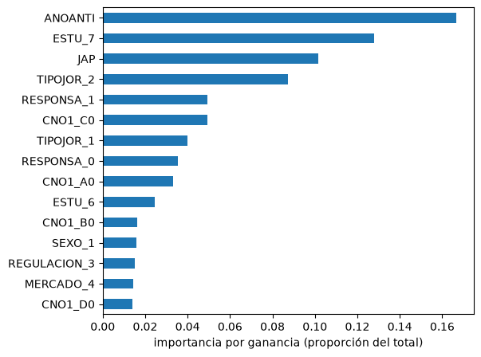
El gráfico anterior reparte la importancia de cada predictor categórico entre sus categorías: los estudios aparecen en varias barras (ESTU_7, ESTU_6…), y la ocupación, en otras tantas. Para saber cuánto pesa cada predictor completo conviene volver a agrupar sus columnas, y es lo que hacemos a continuación.
Para sumar la ganancia por predictor necesitamos saber a qué predictor pertenece cada columna.
El nombre de una columna categórica es el del predictor seguido de _ y la categoría: ESTU_7 es la columna de los trabajadores con licenciatura o doctorado.
Las numéricas conservan su nombre (ANOANTI).
Por eso el predictor es lo que hay antes del primer _. Lo guardamos en predictor_de_columna.
# Predictor original de cada columna: lo que hay antes del primer "_" ("ESTU_7" -> "ESTU").predictor_de_columna = pd.Series(nombres.str.split("_").str[0], index=nombres)# Ganancia sumada por predictor original, de mayor a menor.ganancia_predictor = ganancia.groupby(predictor_de_columna).sum()ganancia_predictor.sort_values(ascending=False).round(3)
Por columnas, la antigüedad (ANOANTI) y la licenciatura o el doctorado (ESTU_7) encabezan la lista. Les siguen las horas pactadas (JAP) y una de las dos columnas de la jornada (TIPOJOR_1 o TIPOJOR_2).
Por predictores, los estudios (ESTU), la antigüedad y la jornada (TIPOJOR) son los tres que más pesan, con entre unos 0,13 y 0,22 cada uno.
Les siguen, con alrededor de 0,1 o algo menos cada uno, la ocupación (CNO1), las horas pactadas, la responsabilidad (RESPONSA) y la actividad de la empresa (CNACE).
La ocupación sube al sumar: ninguna de sus 16 columnas pasa de 0,05, pero juntas quedan cerca del grupo de cabeza.
Las cifras cambian de un ordenador a otro, y también con la semilla del modelo. Dentro del grupo de cabeza el orden puede cambiar, así que no ordenamos predictores con importancias parecidas: lo que se mantiene es quiénes forman el grupo.
2.2 Importancia por permutación
La importancia por permutación mide cuánto empeora el modelo cuando pierde la información de un predictor.
Se calcula el RMSE del modelo con los trabajadores del test.
Se barajan al azar los valores de un predictor entre esos trabajadores. Así se rompe su relación con el salario, y el resto de predictores no cambia.
Se predice de nuevo y se mide cuánto sube el RMSE.
Se repite varias veces (n_repeats=10) y se promedia.
Como barajamos antes del Pipeline, se baraja el predictor original entero, con todas sus columnas a la vez. Por eso mide los 16 predictores.
Usamos el test, con trabajadores que el modelo no ha visto: mide lo que el predictor aporta a predecir a trabajadores nuevos.
permutation_importance(modelo, X, y, scoring=..., n_repeats=..., random_state=..., n_jobs=...) hace todo el cálculo. Devuelve la media de las repeticiones en importances_mean y su desviación típica en importances_std.
# Importancia por permutación en el test: cuánto sube el RMSE al barajar cada predictor (10 repeticiones).permutacion = permutation_importance(xgb, X_test, y_test, scoring="neg_root_mean_squared_error", n_repeats=10, random_state=SEMILLA, n_jobs=N_NUCLEOS)# Media y desviación típica de las 10 repeticiones, en euros de RMSE.tabla_permutacion = pd.DataFrame({"media": permutacion.importances_mean,"desviacion_tipica": permutacion.importances_std,}, index=X_test.columns)tabla_permutacion = tabla_permutacion.sort_values("media", ascending=False)tabla_permutacion.round(0)
media
desviacion_tipica
ANOANTI
2081.0
97.0
ESTU
2007.0
73.0
CNO1
1800.0
84.0
CNACE
1098.0
97.0
TIPOJOR
919.0
120.0
JAP
894.0
79.0
RESPONSA
531.0
55.0
SEXO
379.0
44.0
ANOS2
331.0
39.0
REGULACION
328.0
28.0
MERCADO
287.0
49.0
NUTS1
251.0
62.0
ESTRATO2
184.0
29.0
CONTROL
67.0
13.0
TIPOCON
53.0
15.0
TIPOPAIS
13.0
26.0
# Barras con la desviación típica de las repeticiones.tabla_permutacion.sort_values("media").plot.barh(y="media", xerr="desviacion_tipica", legend=False, figsize=(6, 5))plt.xlabel("aumento del RMSE al barajar el predictor (euros)")plt.show()
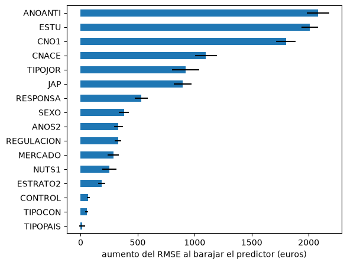
Lectura de los resultados.
La antigüedad y los estudios encabezan la lista, casi empatados: al barajar cualquiera de los dos, el RMSE sube unos 2 000 euros. Su diferencia es menor que la desviación típica de las repeticiones, así que no los ordenamos.
Les sigue la ocupación, con unos 1 600-1 800 euros.
Después vienen, muy juntos, la actividad de la empresa (CNACE), la jornada y las horas pactadas, con unos 800-1 200 euros cada uno.
El tipo de contrato (TIPOCON), el control de la empresa (CONTROL) y el país (TIPOPAIS) apenas pesan.
Para pensar 2
En la ganancia, la jornada (TIPOJOR) pesa tanto o más que la ocupación (CNO1). Pero al barajar la ocupación, el RMSE sube bastante más que al barajar la jornada. ¿Por qué pueden diferir tanto las dos medidas?
Pista. Piensa en lo que dicen dos de los predictores:
TIPOJOR dice si el trabajador está a tiempo completo (1) o a tiempo parcial (2).
JAP dice cuántas horas al año pacta en su contrato.
Si barajamos TIPOJOR y dejamos JAP como está, ¿puede el modelo saber todavía quién trabaja a tiempo parcial?
Respuesta
La ganancia cuenta todos los cortes que usaron la columna al ajustar el modelo. La permutación mide lo que el modelo pierde al quedarse sin ese predictor, con los demás intactos.
Las horas pactadas llevan casi toda la información de la jornada: los trabajadores a tiempo completo pactan entre unas 1 150 y 2 000 horas al año, y la mayoría de los de tiempo parcial, muchas menos.
Al barajar solo la jornada, el modelo sigue sabiendo por las horas quién trabaja a tiempo parcial, y el error apenas sube. Si se barajaran las dos a la vez, el error subiría más que la suma de las dos por separado.
La ocupación no tiene un sustituto tan completo, y al barajarla el modelo pierde más.
Con predictores asociados, la permutación reparte mal la importancia. Mide lo que aporta cada predictor cuando los demás siguen en el modelo. La información que comparte con otros queda fuera de su importancia, porque los demás la siguen aportando.
Ejercicio 2. ¿Es la importancia del modelo o de los datos?
El XGBoost determinista y el estocástico se ajustan con los mismos trabajadores, y sus RMSE de validación cruzada casi no se distinguen. ¿Usan los predictores de la misma forma?
Ajusta xgb_det con todo el entrenamiento.
Calcula su ganancia sumada por predictor original, como en 2.1, y ponla en una tabla junto a ganancia_predictor. Sus columnas tienen los mismos nombres que las de xgb.
Calcula su importancia por permutación en el test, como en 2.2, y ponla en una tabla junto a la del estocástico, con una columna para la diferencia.
¿Qué predictores ceden importancia en el estocástico y cuáles la ganan? Relaciónalo con colsample_bytree y con dos asociaciones de los datos: los estudios y la ocupación van muy unidos, y las horas pactadas separan casi por completo a los trabajadores a tiempo parcial.
# Paso 1. XGBoost determinista ajustado con todo el entrenamiento.xgb_det.fit(X_train, y_train)# Paso 2. Ganancia del determinista sumada por predictor, junto a la del estocástico.ganancia_det = pd.Series(xgb_det["modelo"].feature_importances_, index=nombres)ganancia_det_predictor = ganancia_det.groupby(predictor_de_columna).sum()comparacion_ganancia = pd.DataFrame({"determinista": ganancia_det_predictor,"estocastico": ganancia_predictor,})comparacion_ganancia.sort_values("estocastico", ascending=False).round(3)
determinista
estocastico
ESTU
0.229
0.170
ANOANTI
0.166
0.166
TIPOJOR
0.171
0.127
CNO1
0.083
0.126
JAP
0.077
0.102
RESPONSA
0.081
0.085
CNACE
0.070
0.071
REGULACION
0.021
0.026
MERCADO
0.022
0.025
ANOS2
0.019
0.024
SEXO
0.024
0.024
NUTS1
0.016
0.020
ESTRATO2
0.012
0.018
CONTROL
0.004
0.010
TIPOCON
0.002
0.004
TIPOPAIS
0.002
0.003
# Paso 3. Permutación del determinista en el test, junto a la del estocástico.permutacion_det = permutation_importance(xgb_det, X_test, y_test, scoring="neg_root_mean_squared_error", n_repeats=10, random_state=SEMILLA, n_jobs=N_NUCLEOS)comparacion_permutacion = pd.DataFrame({"determinista": permutacion_det.importances_mean,"estocastico": permutacion.importances_mean,}, index=X_test.columns)comparacion_permutacion["diferencia"] = comparacion_permutacion["estocastico"] - comparacion_permutacion["determinista"]comparacion_permutacion.sort_values("estocastico", ascending=False).round(0)
determinista
estocastico
diferencia
ANOANTI
2278.0
2081.0
-197.0
ESTU
2234.0
2007.0
-227.0
CNO1
1716.0
1800.0
84.0
CNACE
1140.0
1098.0
-42.0
TIPOJOR
1165.0
919.0
-247.0
JAP
930.0
894.0
-35.0
RESPONSA
557.0
531.0
-26.0
SEXO
364.0
379.0
15.0
ANOS2
276.0
331.0
56.0
REGULACION
354.0
328.0
-27.0
MERCADO
285.0
287.0
2.0
NUTS1
195.0
251.0
56.0
ESTRATO2
206.0
184.0
-22.0
CONTROL
57.0
67.0
10.0
TIPOCON
57.0
53.0
-5.0
TIPOPAIS
31.0
13.0
-18.0
Paso 4. ¿Qué predictores ceden importancia en el estocástico y cuáles la ganan? ¿Por qué?
Solución.
Ganancia.
Los estudios bajan de unos 0,23 a 0,17, y la jornada, de unos 0,17 a 0,13.
La ocupación sube de unos 0,08 a 0,13, y las horas pactadas, algo menos (de unos 0,08 a 0,10).
Las cifras cambian con la semilla y con el ordenador, pero el sentido se mantiene: los estudios y la jornada ceden ganancia, y la ocupación la gana.
La ganancia pasa de un predictor a otro asociado con él: de los estudios a la ocupación, y de la jornada a las horas.
Con colsample_bytree=0.5, la mitad de los árboles, más o menos, no puede usar la columna ESTU_7, y lo mismo pasa con las de la jornada.
En esos árboles, el modelo corta por el predictor que lleva una información parecida.
Permutación. El cambio es menos nítido, y su sentido depende de la semilla. Aquí, los estudios, la jornada y la antigüedad pierden unos 200-250 euros, y la ocupación gana algo (en torno a una desviación típica).
Conclusión. Dos modelos con casi el mismo error reparten la importancia de forma distinta. Por eso, la importancia describe cómo usa los predictores un modelo concreto, y puede cambiar de un modelo a otro con los mismos datos.
Bloque 3. ¿Cómo cambia la predicción con un predictor?
3.1 Dependencia parcial y curvas ICE de la antigüedad
La curva ICE (individual conditional expectation) de un trabajador es su predicción cuando solo cambia un predictor, aquí la antigüedad, y el resto de sus predictores se quedan como están.
La dependencia parcial es la media de las curvas ICE de todos los trabajadores.
PartialDependenceDisplay.from_estimator(modelo, X, [predictor], kind="both", subsample=50, random_state=...) dibuja la dependencia parcial (línea discontinua) y 50 curvas ICE elegidas al azar (líneas finas).
Las rayas del eje horizontal marcan los deciles del predictor: entre dos rayas hay un 10 % de los trabajadores.
Con el Pipeline, pasamos el test sin preprocesar.
# Dependencia parcial y 50 curvas ICE de la antigüedad, con los trabajadores del test.PartialDependenceDisplay.from_estimator(xgb, X_test, ["ANOANTI"], kind="both", subsample=50, random_state=SEMILLA)plt.show()
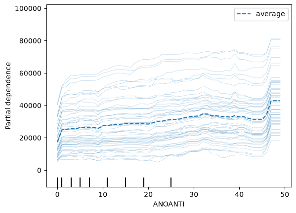
# Cuantiles de la antigüedad: valores por debajo de los que queda el 20, 50, 75, 90, 95 y 99,75 % de los trabajadores.datos["ANOANTI"].quantile(q=[0.2, 0.5, 0.75, 0.9, 0.95, 0.9975])
La curva media sube con fuerza entre 0 y 1 año de antigüedad, de unos 17 000 a unos 25 000 euros.
Después sube despacio: unos 26 000 euros con 5 años y unos 35 000 con 33.
Las rayas de los deciles llegan hasta unos 25 años. Los cuantiles de la celda anterior lo confirman: la mitad de los trabajadores tiene 7 años de antigüedad o menos, el 90 %, unos 26 o menos, y solo un 0,25 % pasa de 45.
El salto por encima de 45 años se basa en una extrapolación con muy pocos trabajadores, y su interpretación es arriesgada.
Las curvas ICE van casi paralelas: el modelo da a todos los trabajadores un efecto parecido de la antigüedad, sobre niveles muy distintos que dependen del resto de sus predictores.
Para pensar 3
Entre 0 y 1 año de antigüedad, la curva media sube unos 7 500-8 000 euros. ¿Quiere decir que el salario de un trabajador sube eso en su primer año en la empresa?
Respuesta
No. La curva da, para cada valor de la antigüedad, el salario medio que predice el modelo. Describe una asociación que el modelo ha aprendido de los datos.
En los datos, los trabajadores con antigüedad 0 no se diferencian de los demás solo en la antigüedad. Por ejemplo, muchos entraron en la empresa durante el año y cobraron menos meses de salario.
Por eso la subida no compara a un mismo trabajador con y sin un año más en la empresa, con todo lo demás igual (ceteris paribus). Compara trabajadores en los que, junto con la antigüedad, cambian otras cosas que el modelo no ve (mutatis mutandis).
La curva no mide el efecto causal de la antigüedad sobre el salario.
3.2 Un predictor categórico: los estudios
Con un predictor categórico, la dependencia parcial da una barra por categoría: la predicción media de todos los trabajadores cuando toman esa categoría. Se pide con categorical_features.
# Dependencia parcial de los estudios, una barra por código.PartialDependenceDisplay.from_estimator(xgb, X_test, ["ESTU"], categorical_features=["ESTU"])plt.show()
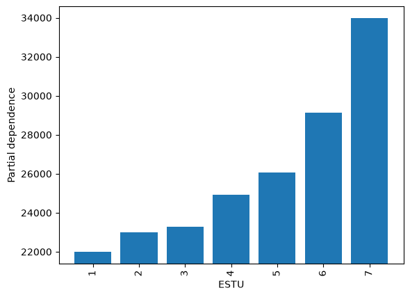
Lectura de los resultados.
La predicción media sube con el nivel de estudios: unos 22 000 euros con el código 1 (menos que primaria) y unos 34 000 con el 7 (licenciatura o doctorado).
El escalón mayor está entre la diplomatura (6) y la licenciatura (7).
Ejercicio 3. Curvas ICE centradas de las horas pactadas
Cuando las curvas ICE tienen niveles muy distintos, cuesta ver si su forma cambia de un trabajador a otro. Las curvas ICE centradas restan a cada curva su valor en el primer punto de la rejilla. Así todas empiezan en 0, y cada una muestra solo cuánto cambia la predicción de ese trabajador. Se piden con centered=True.
Dibuja la dependencia parcial y 50 curvas ICE centradas de las horas pactadas (JAP).
¿Es el efecto de las horas el mismo para todos los trabajadores? ¿En qué tramo de horas se separan las curvas?
# Paso 1. Dependencia parcial y 50 curvas ICE centradas de las horas pactadas.PartialDependenceDisplay.from_estimator(xgb, X_test, ["JAP"], kind="both", centered=True, subsample=50, random_state=SEMILLA)plt.show()
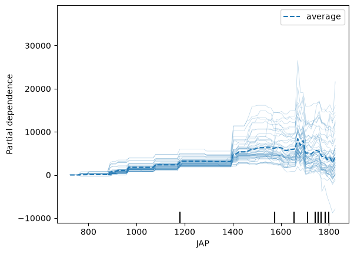
Paso 2. ¿Es el efecto de las horas el mismo para todos los trabajadores? ¿En qué tramo de horas se separan las curvas?
Solución.
La rejilla va de unas 720 a unas 1 830 horas al año (de los percentiles 5 al 95).
Hasta unas 1 400 horas, las curvas suben juntas y a escalones, unos 3 000 euros.
Por encima de unas 1 400 horas se separan: unas siguen subiendo hasta 10 000 euros o más, y otras se quedan o bajan.
Las rayas de los deciles muestran que la mayoría de los trabajadores pacta más de unas 1 500 horas, justo en el tramo donde las curvas se separan.
El efecto de las horas no es el mismo para todos. Depende del resto de predictores del trabajador: el modelo tiene interacciones.
Para pensar 4
Una curva ICE de un trabajador a tiempo completo recorre toda la rejilla, también 720 u 800 horas al año. ¿Hay trabajadores así en los datos? ¿Qué consecuencia tiene para la lectura de las curvas?
Respuesta
Casi no hay. En el entrenamiento, los trabajadores a tiempo completo pactan entre unas 1 150 y 2 000 horas al año, con una media de unas 1 725. Los de tiempo parcial pactan de media unas 1 060.
En el tramo bajo de la rejilla, la curva de un trabajador a tiempo completo pasa por combinaciones que no existen en los datos. Ahí el modelo extrapola: predice en una zona donde no ha visto ningún trabajador.
La dependencia parcial promedia esas curvas, así que también mezcla combinaciones reales con combinaciones inventadas.
Con predictores asociados, como la jornada y las horas, las curvas solo se leen donde hay datos.
Bloque 4. ¿Por qué el modelo predice este salario para este trabajador?
4.1 Valores de Shapley
Los valores de Shapley reparten la predicción de un trabajador entre sus predictores:
Cada \(\phi_j\) es la contribución del predictor \(j\): cuánto sube (si es positiva) o baja (si es negativa) la predicción de ese trabajador respecto del valor base.
\(\phi_j\) es la media, sobre todos los órdenes posibles en que se van añadiendo los predictores, de cuánto cambia la predicción al añadir el predictor \(j\). La idea viene de la teoría de juegos.
Para modelos de árboles, shap.TreeExplainer calcula los \(\phi_j\) exactos en segundos.
Con feature_perturbation="tree_path_dependent", el efecto de «añadir» un predictor se calcula con la proporción de trabajadores del ajuste que siguió cada rama de cada árbol.
TreeExplainer trabaja con el XGBoost de dentro del Pipeline (xgb["modelo"]), que recibe las 88 columnas preprocesadas. Por eso transformamos antes el test con el preprocesador ya ajustado (xgb["preprocesado"]).
# Test preprocesado: las 88 columnas que recibe XGBoost, con sus nombres.X_test_prep = pd.DataFrame(xgb["preprocesado"].transform(X_test), columns=nombres, index=X_test.index)# Valores de Shapley de los 2 000 trabajadores del test.explicador = shap.TreeExplainer(xgb["modelo"], feature_perturbation="tree_path_dependent")explicacion = explicador(X_test_prep)explicacion.values = explicacion.values.astype(float) # en float64, para que el waterfall no duplique f(x)
4.2 Un trabajador: el gráfico waterfall
shap.plots.waterfall dibuja la explicación de un trabajador.
Se lee de abajo arriba. Empieza en el valor base, \(E[f(X)]\), y cada barra suma (en rojo) o resta (en azul) el \(\phi\) de una columna. Arriba está la predicción, \(f(x)\).
Los \(\phi\) están calculados por columnas del preprocesado, así que un predictor categórico puede aparecer en varias barras.
A la izquierda de cada barra está el valor de la columna para ese trabajador. En una columna de una categoría, 1 indica que el trabajador la tiene y 0 que no: «0 = ESTU_7» quiere decir que no tiene licenciatura ni doctorado.
También una categoría que el trabajador no tiene puede sumar o restar: no tener licenciatura baja la predicción respecto del valor base.
Las columnas van ordenadas por el tamaño de su \(\phi\), y la última barra suma el resto.
Dibujamos el del primer trabajador del test (posición 0).
# Salario del primer trabajador del test y waterfall de su predicción.print("Salario:", round(y_test.iloc[0]), "euros")shap.plots.waterfall(explicacion[0], max_display=10)
Salario: 14300 euros
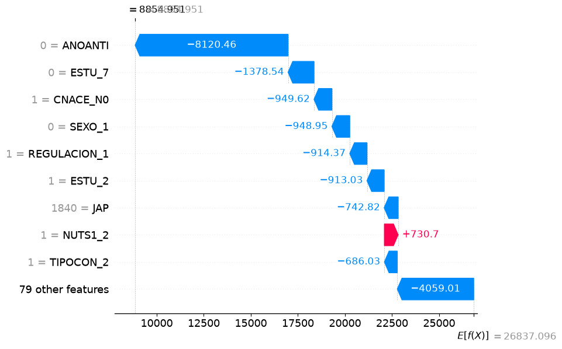
Lectura de los resultados.
El modelo predice para este trabajador menos de 9 000 euros, frente a un salario de 14 300.
Su antigüedad 0 es, con diferencia, lo que más baja la predicción: resta unos 8 000 euros al valor base.
Le sigue no tener licenciatura ni doctorado (ESTU_7 = 0), que resta unos 1 400 euros.
Después vienen varias columnas que restan en torno a 1 000 euros cada una: tener estudios primarios (ESTU_2 = 1), ser mujer (SEXO_1 = 0, no es hombre), la actividad de la empresa (servicios administrativos y auxiliares, CNACE_N0 = 1) y la forma de regulación laboral (REGULACION_1 = 1). Sus cifras y su orden cambian de un ordenador a otro.
Los estudios aparecen en dos barras, ESTU_7 y ESTU_2: entre las dos restan más de 2 000 euros.
Los \(\phi\) explican esta predicción del modelo con el trabajador tal como es. No dicen qué cobraría si cambiara uno de sus rasgos.
4.3 Todos los trabajadores: la distribución de los \(\phi\)
Un waterfall explica a un trabajador. Para ver todos a la vez, shap.plots.beeswarm dibuja los \(\phi\) de los 2 000 trabajadores del test:
una fila por columna del preprocesado, ordenadas por la media de \(|\phi|\);
un punto por trabajador, situado en el eje horizontal según su \(\phi\);
el color indica el valor de la columna: rojo, alto, y azul, bajo. En una columna de una categoría, rojo es 1 (el trabajador la tiene) y azul es 0.
# φ de los 2 000 trabajadores en las 11 columnas con mayor media de |φ|; la última fila suma el resto.shap.plots.beeswarm(explicacion, max_display=12)
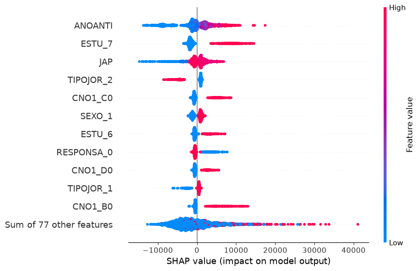
Lectura de los resultados.
Antigüedad. Los puntos azules (poca antigüedad) llegan a restar más de 10 000 euros, y los rojos suman hasta unos 10 000, algunos más.
Licenciatura o doctorado (ESTU_7). Los trabajadores que la tienen (rojo) suman entre unos 3 000 y 15 000 euros, y los que no, restan un poco.
Horas pactadas. Restan mucho cuando son pocas (azul), y su contribución se concentra cerca de 0 cuando son muchas.
Jornada. Aparece en dos filas, TIPOJOR_2 (tiempo parcial) y TIPOJOR_1 (tiempo completo), porque sus dos columnas llevan la misma información. Los trabajadores a tiempo parcial (rojo en TIPOJOR_2, azul en TIPOJOR_1) restan varios miles de euros. El modelo reparte ese efecto entre las dos columnas, y el reparto cambia de un ordenador a otro.
Ocupación. Aparece en varias filas, una por ocupación (CNO1_C0, CNO1_D0…). Tener esa ocupación (rojo) suma varios miles de euros.
Dispersión. Dentro de cada color, los puntos se dispersan: la misma categoría contribuye distinto según el resto del trabajador.
Columnas y predictores. Un mismo predictor aparece en varias filas: los estudios, la jornada o la ocupación. Si sumáramos los \(\phi\) de las columnas de cada predictor, como hicimos con la ganancia en 2.1, tendríamos la contribución de cada predictor completo. Es una opción cuando interesa el predictor entero y no cada una de sus categorías.
La media de \(|\phi|\) de cada columna resume esa distribución en una importancia global: cuánto mueve, de media, cada columna las predicciones, en euros. shap.plots.bar la dibuja para las 15 columnas con mayor media, y la última barra suma las otras 73.
# Media de |φ| de cada columna, en euros: las 15 primeras y, en la última barra, la suma del resto.shap.plots.bar(explicacion, max_display=16)
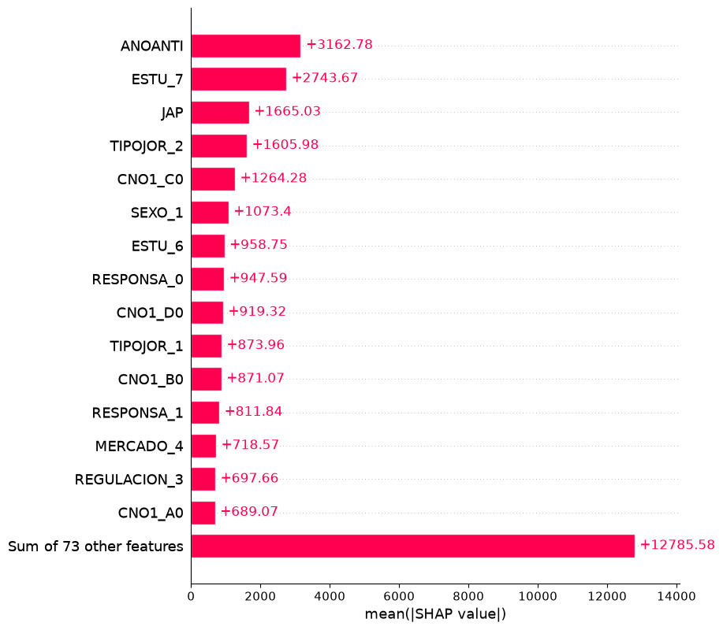
Lectura de los resultados.
La antigüedad y la licenciatura o doctorado (ESTU_7) son las dos columnas que más mueven las predicciones, con unos 3 000 euros cada una.
Les siguen las horas pactadas (unos 1 600 euros) y una de las dos columnas de la jornada, con una cifra de entre unos 1 400 y 2 100 euros que cambia de un ordenador a otro.
Después vienen columnas de la ocupación, el sexo, otros niveles de estudios y la responsabilidad, con menos de 1 500 euros cada una. Su orden también cambia de un ordenador a otro.
La última barra es la más larga porque suma la media de \(|\phi|\) de las otras 73 columnas.
Para pensar 5
Las horas pactadas (JAP) tienen una sola columna, así que la media de \(|\phi|\) y la permutación se refieren a lo mismo. Su media de \(|\phi|\) es de unos 1 600 euros, pero al barajarlas el RMSE sube menos de 900. ¿Qué mide cada medida, y por qué pueden dar cifras tan distintas?
Respuesta
La media de \(|\phi|\) mide cuánto mueve el predictor las predicciones del modelo, sin mirar el salario observado.
La permutación mide cuánto empeora el error cuando el predictor pierde su relación con el salario.
Un predictor puede mover mucho las predicciones y aportar menos al error, por dos motivos:
El RMSE eleva los errores al cuadrado antes de promediarlos. Si a un error de unos 10 000 euros se le suma otro de 1 600 sin relación con él, el RMSE pasa a \(\sqrt{10\,000^2 + 1\,600^2} \approx 10\,130\): sube mucho menos que 1 600.
Si otro predictor lleva parte de la misma información, el modelo la conserva al barajar el primero. Aquí, la jornada (TIPOJOR) sigue diciendo quién trabaja a tiempo parcial, que es donde más pesan las horas (Para pensar 2).
4.4 Un predictor en todos los trabajadores: el gráfico scatter
shap.plots.scatter dibuja, para un predictor, cada trabajador como un punto: en el eje horizontal, su valor del predictor, y en el vertical, su \(\phi\).
Se parece a la dependencia parcial, pero solo muestra trabajadores reales, con sus valores reales de los demás predictores.
La dispersión vertical para un mismo valor del predictor indica que su contribución depende del resto del trabajador (interacciones).
# φ de la antigüedad frente a su valor, en los 2 000 trabajadores del test.shap.plots.scatter(explicacion[:, "ANOANTI"])
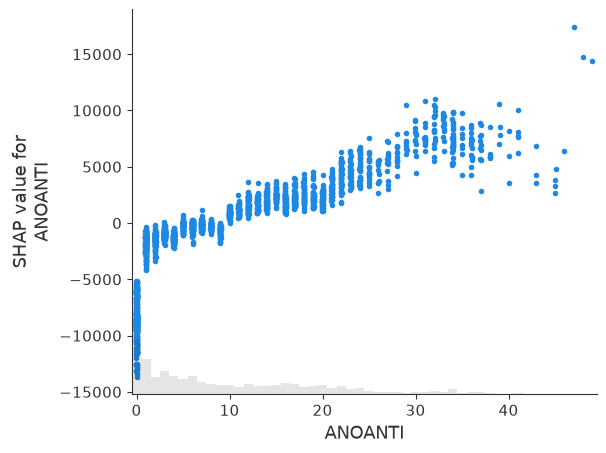
Lectura de los resultados.
Con antigüedad 0, la contribución es muy negativa, entre unos −14 000 y −5 000 euros.
Con 1 año, la contribución ya es de solo unos −2 000 euros. A partir de unos 10 años pasa a ser positiva y crece despacio, hasta unos +5 000 o +10 000 euros por encima de 30 años.
La forma recuerda a la dependencia parcial del apartado 3.1.
Con el mismo valor de la antigüedad, los puntos se separan varios miles de euros: el modelo da a la antigüedad contribuciones distintas según el resto del trabajador.
Los \(\phi\) describen cómo usa el modelo la antigüedad para predecir. Saber cuánto cambiaría el salario de un trabajador con un año más de antigüedad exige un análisis causal (Para pensar 3).
Ejercicio 4. La explicación de otro trabajador
Localiza al primer trabajador del test con licenciatura o doctorado (ESTU = 7). Su posición es la del primer True de X_test["ESTU"] == 7, que puedes obtener con np.flatnonzero(...)[0].
Imprime su salario y dibuja su waterfall, como en 4.2.
Compara sus tres mayores contribuciones con las del primer trabajador del test. ¿Qué predictores pesan en los dos? ¿Tienen el mismo signo?
# Paso 1. Posición del primer trabajador del test con licenciatura o doctorado.posicion = np.flatnonzero(X_test["ESTU"] ==7)[0]print("Posición:", posicion)# Paso 2. Su salario y el waterfall de su predicción.print("Salario:", round(y_test.iloc[posicion]), "euros")shap.plots.waterfall(explicacion[posicion], max_display=10)
Posición: 4
Salario: 76593 euros
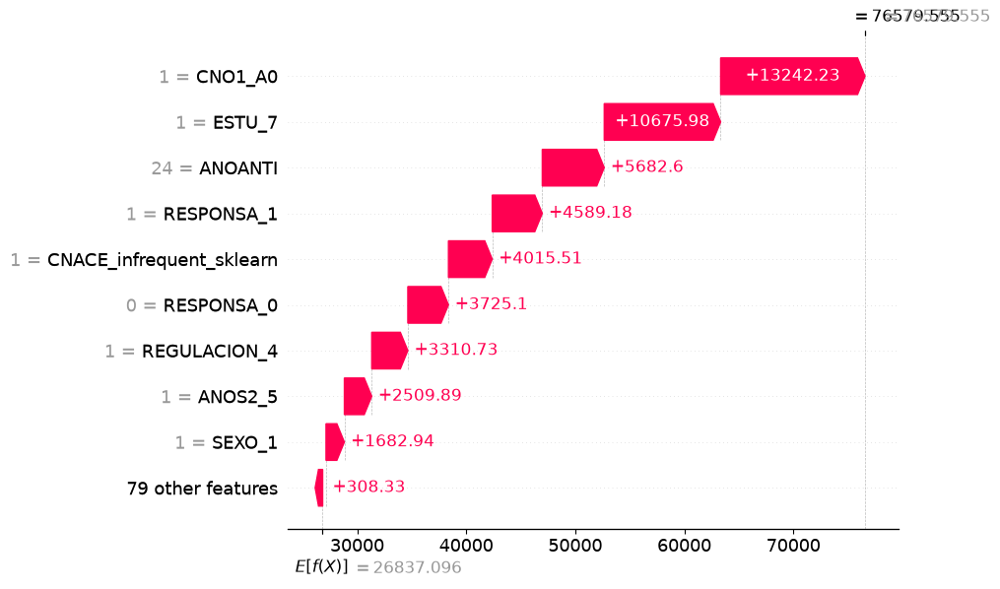
Paso 3. Compara sus tres mayores contribuciones con las del primer trabajador del test. ¿Qué predictores pesan en los dos? ¿Tienen el mismo signo?
Solución.
Es el trabajador de la posición 4. El modelo le predice más de 75 000 euros, cerca de su salario (unos 76 600).
Sus mayores contribuciones son positivas:
ser director o gerente (CNO1_A0 = 1) y tener licenciatura o doctorado (ESTU_7 = 1) suman entre unos 11 000 y 13 000 euros cada una; su orden cambia de un ordenador a otro;
le siguen su antigüedad, de 24 años, que suma unos 6 000 euros, y la responsabilidad de supervisión, que aparece en dos barras (RESPONSA_1 = 1 y RESPONSA_0 = 0) y suma varios miles de euros entre las dos.
También suma unos 4 000 euros CNACE_infrequent_sklearn = 1: es la columna que agrupa las actividades con menos del 1 % de los trabajadores, y la suya es una de ellas.
Frente al primer trabajador:
los estudios pesan en los dos, con signo contrario: ESTU_7 resta unos 1 400 euros al que no tiene licenciatura y suma más de 10 000 al que la tiene;
la antigüedad, también: resta unos 8 000 euros con 0 años y suma unos 6 000 con 24.
La misma columna sube o baja la predicción según su valor y el resto del trabajador. Cada waterfall explica una predicción respecto del valor base.
Ejercicio 5. Las horas pactadas y la jornada
shap.plots.scatter puede colorear los puntos con otra columna, mediante el argumento color. Así se ve si la contribución de un predictor cambia con otro.
Dibuja el scatter de los \(\phi\) de las horas pactadas (JAP), con cada punto coloreado según TIPOJOR_2 (1, jornada a tiempo parcial): color=explicacion[:, "TIPOJOR_2"].
¿Depende la contribución de las horas de la jornada? ¿Qué muestra el scatter que no mostraban las curvas ICE del ejercicio 3?
# Paso 1. φ de las horas pactadas frente a su valor, coloreados por la jornada a tiempo parcial.shap.plots.scatter(explicacion[:, "JAP"], color=explicacion[:, "TIPOJOR_2"])
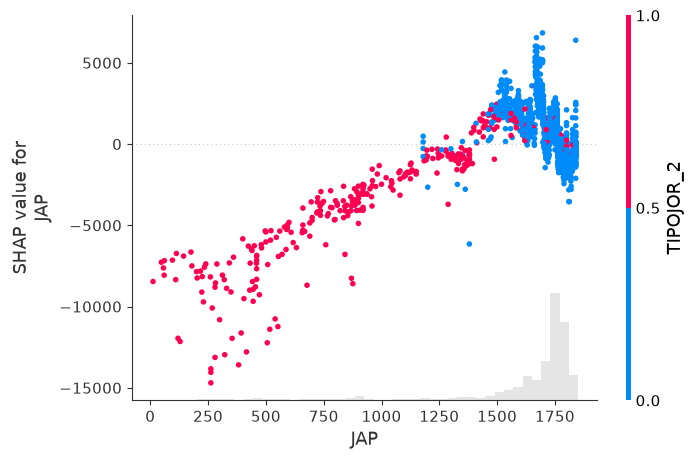
Paso 2. ¿Depende la contribución de las horas de la jornada? ¿Qué muestra el scatter que no mostraban las curvas ICE del ejercicio 3?
Solución.
Tiempo parcial (rojo). La contribución sube casi en línea recta con las horas: de unos −15 000 a −7 000 euros con menos de 500 horas, a unos 0 con 1 300.
Tiempo completo (azul). Los puntos se concentran entre unas 1 500 y 1 840 horas, con contribuciones de unos −3 000 a +6 000 euros y sin una subida clara.
Sí depende. Para el modelo, las horas pesan mucho en los trabajadores a tiempo parcial, y poco en los de tiempo completo, cuyas horas varían poco.
Frente a las ICE. El scatter solo muestra trabajadores reales. No hay puntos azules por debajo de unas 1 150 horas, la zona donde las curvas ICE de los trabajadores a tiempo completo extrapolaban (Para pensar 4).
Es una asociación que el modelo ha aprendido de los datos. Saber cuánto cambiaría el salario si un trabajador pactara más horas exige un análisis causal.
4.5 Un explicador para cualquier modelo
TreeExplainer es rápido porque recorre los árboles del modelo, así que solo sirve para modelos de árboles. Para cualquier otro modelo (una red neuronal, un stacking…), shap tiene un explicador general, shap.Explainer(funcion_de_prediccion, fondo), que solo necesita las predicciones del modelo.
Para «quitar» un predictor, el explicador general lo sustituye por los valores de un fondo: una muestra de trabajadores del entrenamiento. El valor base es la predicción media del fondo.
Prueba muchos órdenes al azar en que se van añadiendo los predictores y promedia cuánto cambia la predicción al añadir cada uno. El resultado es una aproximación a los \(\phi\).
Para cada trabajador hace muchas predicciones, así que tarda bastante más que TreeExplainer. Por eso lo aplicamos a un conjunto restringido: los 200 primeros trabajadores del test, con un fondo de 100 trabajadores del entrenamiento.
Lo aplicamos al mismo XGBoost, con las mismas 88 columnas, para comparar los dos explicadores. La celda siguiente tarda: bastante más que la de 4.1, aunque explica a diez veces menos trabajadores.
# Fondo: 100 trabajadores del entrenamiento, preprocesados como el test.X_train_prep = pd.DataFrame(xgb["preprocesado"].transform(X_train), columns=nombres, index=X_train.index)fondo = X_train_prep.sample(100, random_state=SEMILLA)# Explicador general: solo usa las predicciones del XGBoost. Lo aplicamos a los 200 primeros trabajadores del test.explicador_general = shap.Explainer(xgb["modelo"].predict, fondo, seed=SEMILLA)explicacion_general = explicador_general(X_test_prep.iloc[:200])
# Waterfall del primer trabajador del test con el explicador general, para compararlo con el de 4.2.shap.plots.waterfall(explicacion_general[0], max_display=10)
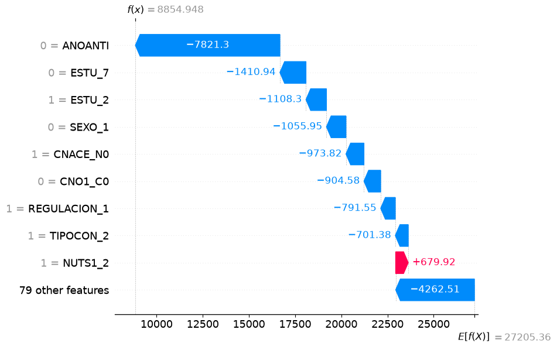
Lectura de los resultados.
La predicción, \(f(x)\), es la misma que en 4.2: los dos explicadores reparten la misma predicción del modelo.
El valor base, \(E[f(X)]\), es algo mayor que en 4.2, unos 27 200 euros frente a unos 26 800, porque ahora es la predicción media de los 100 trabajadores del fondo.
El reparto es casi el mismo: la antigüedad 0 resta unos 8 000 euros, y le siguen casi las mismas columnas, con cifras parecidas y quizá en otro orden.
Las pequeñas diferencias tienen dos causas:
El explicador general aproxima los \(\phi\).
Para «quitar» un predictor usa los 100 trabajadores del fondo. TreeExplainer usa todos los del entrenamiento, que quedaron registrados en los árboles.
Con un modelo de árboles, TreeExplainer es la mejor opción: es exacto y rápido. El explicador general es la opción cuando el modelo no es de árboles.
Cierre. Qué responde cada herramienta
Importancia por ganancia (feature_importances_). Qué columnas usaron los cortes del ajuste. Es rápida, pero trocea los predictores categóricos y se calcula con los datos del ajuste.
Importancia por permutación. Cuánto empeora el error en datos nuevos al quedarse sin un predictor. Sirve para cualquier modelo, pero reparte mal la importancia de los predictores asociados.
Dependencia parcial y curvas ICE. Cómo cambia la predicción al mover un predictor, de media o trabajador a trabajador. Recorren combinaciones que pueden no existir.
Valores de Shapley.
El waterfall reparte una predicción entre las columnas.
El beeswarm y la barra resumen todos los trabajadores.
El scatter muestra cómo cambia la contribución de un predictor con su valor, solo en trabajadores reales.
TreeExplainer los calcula exactos y rápido, pero solo para modelos de árboles. El explicador general sirve para cualquier modelo, pero aproxima y tarda más.
Todas describen el modelo. Muestran cómo usa el modelo las asociaciones de los datos. La importancia es una propiedad del modelo ajustado: otro modelo con los mismos datos puede repartirla de otra forma (ejercicio 2). Ninguna mide efectos causales.
Bloque 5. Tareas opcionales
5.1 Combinar modelos
En lugar de quedarnos con un modelo, podemos combinar las predicciones de varios:
Voting: la predicción es la media de las predicciones de los modelos.
Stacking: un segundo modelo, el metamodelo, aprende cuánto pesa cada uno. Aquí es una regresión lineal que usa las predicciones de los modelos como predictores.
Combinar ayuda sobre todo cuando los modelos se equivocan con trabajadores distintos.
Ejercicio 6 (opcional). Voting y stacking
Random forest. Crea un Pipelinebosque, con crear_preprocesador(escalar=False) y RandomForestRegressor(n_estimators=100, max_features=0.33, n_jobs=N_NUCLEOS, random_state=SEMILLA), y calcula su RMSE de validación cruzada con cv5.
Voting. Crea VotingRegressor(estimators=[("bosque", bosque), ("xgb", xgb)]) y calcula su RMSE de validación cruzada.
Stacking. Crea StackingRegressor(estimators=[("lineal", lineal), ("bosque", bosque), ("xgb", xgb)], final_estimator=LinearRegression(), cv=cv5) y calcula su RMSE de validación cruzada. Después, ajústalo con todo el entrenamiento y lee los pesos del metamodelo en final_estimator_.coef_.
¿Mejora alguna combinación a XGBoost por más de un error típico? ¿Qué peso recibe cada modelo? ¿Por qué crees que la regresión lineal pesa tan poco?
Pistas.
Las tres clases están en sklearn.ensemble: from sklearn.ensemble import RandomForestRegressor, VotingRegressor, StackingRegressor.
estimators es una lista de pares (nombre, modelo). Puedes pasar lineal y xgb aunque ya estén ajustados: las combinaciones y cross_val_score ajustan copias nuevas.
El random forest ya reparte sus árboles entre los núcleos. En los cross_val_score de los modelos que lo contienen, no pongas n_jobs.
El RMSE de validación cruzada del stacking es una validación cruzada anidada: dentro de cada partición exterior, el stacking hace otra con cv5 para crear las predicciones de su metamodelo. Tarda unos segundos.
Extra. Calcula la importancia por permutación del stacking en el test y compárala con la de XGBoost. A diferencia de TreeExplainer, que solo sirve para árboles, la permutación sirve para cualquier modelo.
# Paso 1. Random forest y su RMSE de validación cruzada.from sklearn.ensemble import RandomForestRegressor, VotingRegressor, StackingRegressorbosque = Pipeline([ ("preprocesado", crear_preprocesador(escalar=False)), ("modelo", RandomForestRegressor(n_estimators=100, max_features=0.33, n_jobs=N_NUCLEOS, random_state=SEMILLA)),])puntuaciones_bosque = cross_val_score(bosque, X_train, y_train, scoring="neg_root_mean_squared_error", cv=cv5)print("Random forest | RMSE de validación cruzada:", round(-puntuaciones_bosque.mean()), "euros","| error típico:", round(puntuaciones_bosque.std() / np.sqrt(5)))
Random forest | RMSE de validación cruzada: 11206 euros | error típico: 197
# Paso 2. Voting: media de las predicciones del random forest y XGBoost.voto = VotingRegressor(estimators=[("bosque", bosque), ("xgb", xgb)])puntuaciones_voto = cross_val_score(voto, X_train, y_train, scoring="neg_root_mean_squared_error", cv=cv5)print("Voting | RMSE de validación cruzada:", round(-puntuaciones_voto.mean()), "euros","| error típico:", round(puntuaciones_voto.std() / np.sqrt(5)))
# Paso 3. Stacking: una regresión lineal combina las predicciones de validación cruzada de los tres modelos.apilado = StackingRegressor( estimators=[("lineal", lineal), ("bosque", bosque), ("xgb", xgb)], final_estimator=LinearRegression(), cv=cv5,)# RMSE de validación cruzada anidada.puntuaciones_apilado = cross_val_score(apilado, X_train, y_train, scoring="neg_root_mean_squared_error", cv=cv5)print("Stacking | RMSE de validación cruzada:", round(-puntuaciones_apilado.mean()), "euros","| error típico:", round(puntuaciones_apilado.std() / np.sqrt(5)))# Ajuste con todo el entrenamiento y pesos del metamodelo.apilado.fit(X_train, y_train)print("Pesos:", dict(zip(["lineal", "bosque", "xgb"], apilado.final_estimator_.coef_.round(2).tolist())))
# Extra. Importancia por permutación del stacking en el test, junto a la de XGBoost.permutacion_apilado = permutation_importance(apilado, X_test, y_test, scoring="neg_root_mean_squared_error", n_repeats=10, random_state=SEMILLA, n_jobs=N_NUCLEOS)comparacion_apilado = pd.DataFrame({"stacking": permutacion_apilado.importances_mean,"xgboost": permutacion.importances_mean,}, index=X_test.columns)comparacion_apilado.sort_values("stacking", ascending=False).round(0)
stacking
xgboost
ESTU
2224.0
2007.0
ANOANTI
2178.0
2081.0
CNO1
1557.0
1800.0
TIPOJOR
1170.0
919.0
CNACE
971.0
1098.0
JAP
859.0
894.0
RESPONSA
608.0
531.0
SEXO
399.0
379.0
REGULACION
342.0
328.0
MERCADO
324.0
287.0
ANOS2
282.0
331.0
NUTS1
226.0
251.0
ESTRATO2
172.0
184.0
CONTROL
63.0
67.0
TIPOCON
51.0
53.0
TIPOPAIS
17.0
13.0
Paso 4. ¿Mejora alguna combinación a XGBoost por más de un error típico? ¿Qué peso recibe cada modelo? ¿Por qué crees que la regresión lineal pesa tan poco?
Solución.
El random forest tiene un RMSE de validación cruzada de unos 11 200 euros, peor que XGBoost (unos 10 900).
El voting (unos 10 850 euros) y el stacking (unos 10 830) mejoran a XGBoost en unas decenas de euros, mucho menos que un error típico (unos 190 euros).
El metamodelo da a XGBoost un peso de unos 0,70, al random forest unos 0,30 y a la regresión lineal casi 0.
La regresión lineal pesa poco porque predice peor y porque casi todo lo que sabe ya lo saben los árboles: sus errores van muy unidos a los de los otros dos modelos, y añadirla apenas reduce el error de la combinación.
En la permutación, el stacking se apoya en los mismos predictores que XGBoost, con los estudios y la antigüedad en cabeza: pesa sobre todo XGBoost.
Para pensar 6
StackingRegressor ajusta el metamodelo con predicciones de validación cruzada de los modelos (cv=cv5). ¿Qué pasaría si usara sus predicciones de entrenamiento?
Respuesta
Con las predicciones de entrenamiento, cada modelo predice a trabajadores que ya ha visto. El random forest y XGBoost casi los memorizan, y sus predicciones de entrenamiento parecen mucho mejores de lo que son con trabajadores nuevos.
El metamodelo daría entonces casi todo el peso al modelo que mejor memoriza, y el stacking sobreajustaría: es una fuga de información.
Con validación cruzada, cada trabajador recibe la predicción de un ajuste que no lo vio. El metamodelo aprende los pesos con predicciones honestas, como las que habrá con trabajadores nuevos.
Después, cada modelo se ajusta otra vez con todo el entrenamiento para predecir a trabajadores nuevos.
5.2 Los coeficientes de una regresión lineal
Al principio del cuaderno decíamos que una regresión lineal permite interpretar sus coeficientes. La biblioteca statsmodels ajusta la regresión lineal por mínimos cuadrados ordinarios (MCO) y da, para cada coeficiente, su error típico y su intervalo de confianza.
Ejercicio 7 (opcional). Interpretar los coeficientes con statsmodels
Ajusta la regresión lineal con los 16 predictores en el entrenamiento, con smf.ols(formula, data=entrenamiento).fit(), y muestra los resultados con .summary().
Interpreta los coeficientes de la antigüedad (ANOANTI), de la licenciatura o doctorado (C(ESTU)[T.7]) y de la jornada a tiempo parcial (C(TIPOJOR)[T.2]). ¿Con qué categoría compara cada coeficiente de un predictor categórico?
Compáralos con lo que dice XGBoost: la dependencia parcial de la antigüedad (3.1) y de los estudios (3.2), y el beeswarm de la jornada (4.3). ¿Qué recoge XGBoost que la regresión lineal no puede recoger?
Pistas.
import statsmodels.formula.api as smf.
entrenamiento = X_train.assign(RETRINOIN=y_train) junta en una tabla los predictores y el salario del entrenamiento.
La fórmula es un texto con la respuesta, el signo ~ y los predictores separados por +. C(...) marca un predictor categórico. Puedes escribirla a mano o construirla así: "RETRINOIN ~ ANOANTI + JAP + " + " + ".join(f"C({p})" for p in PRED_CATEGORICOS).
C(ESTU) crea una columna 0/1 por nivel de estudios y deja fuera el primero (1, menos que primaria), que es la categoría de referencia. Cada coeficiente compara un nivel con ella, con el resto de predictores fijos.
.params da los coeficientes, y .conf_int(), sus intervalos de confianza al 95 %.
# Paso 1. Regresión lineal por MCO con statsmodels, en el entrenamiento.import statsmodels.formula.api as smfentrenamiento = X_train.assign(RETRINOIN=y_train)formula ="RETRINOIN ~ ANOANTI + JAP + "+" + ".join(f"C({p})"for p in PRED_CATEGORICOS)mco = smf.ols(formula, data=entrenamiento).fit()print(mco.summary())
# Paso 2. Coeficientes e intervalos de confianza al 95 % de tres términos.terminos = ["ANOANTI", "C(ESTU)[T.7]", "C(TIPOJOR)[T.2]"]tabla_mco = pd.concat([mco.params, mco.conf_int()], axis=1).loc[terminos]tabla_mco.columns = ["coeficiente", "limite_inferior", "limite_superior"]tabla_mco.round(0)
coeficiente
limite_inferior
limite_superior
ANOANTI
350.0
316.0
384.0
C(ESTU)[T.7]
14546.0
10921.0
18171.0
C(TIPOJOR)[T.2]
-6037.0
-7154.0
-4920.0
Pasos 2 y 3. Interpreta los tres coeficientes y compáralos con lo que dice XGBoost. ¿Qué recoge XGBoost que la regresión lineal no puede recoger?
Solución.
La regresión se ajusta con los 8 000 trabajadores del entrenamiento y explica un 58 % de la varianza del salario (\(R^2\) = 0,58).
Antigüedad. Cada año más de antigüedad se asocia con unos 350 euros más de salario anual, con el resto de predictores fijos (intervalo de confianza, de unos 320 a 380). Es la misma cifra para el primer año y para el año 30.
Licenciatura o doctorado. Frente a la categoría de referencia (menos que primaria, ESTU = 1), se asocia con unos 14 500 euros más (intervalo, de unos 10 900 a 18 200), con el resto de predictores fijos.
Jornada a tiempo parcial. Frente al tiempo completo (TIPOJOR = 1), se asocia con unos 6 000 euros menos (intervalo, de unos 4 900 a 7 200 menos), con las mismas horas pactadas y el resto de predictores fijos.
Frente a XGBoost:
Antigüedad. La dependencia parcial de XGBoost sube unos 7 500-8 000 euros en el primer año y después unos 300 euros por año. La regresión lineal impone la misma pendiente para todos los años y no puede recoger el salto del primer año.
Estudios. Las dos dicen algo parecido: la dependencia parcial separa unos 12 000 euros los códigos 1 y 7, y los dos modelos ponen el escalón mayor entre la diplomatura y la licenciatura.
Jornada. La regresión da un único coeficiente, el mismo para todos los trabajadores. En el beeswarm de XGBoost, la jornada a tiempo parcial resta cantidades muy distintas según el trabajador.
Qué recoge XGBoost: relaciones no lineales, como el salto del primer año, e interacciones, como un efecto de la jornada que cambia con el resto del trabajador. A cambio, la regresión lineal resume cada relación en un número, con su intervalo de confianza.
Los coeficientes y las herramientas de XGBoost miden asociaciones con el resto de predictores fijos. Quedan fuera variables que el modelo no ve, como los meses trabajados en el año, y por eso ninguno de los dos mide efectos causales (Para pensar 3).